gw.cov.RdThe function provides an implementation of geographically weighted local statistics based on Chapter 7 of the GWR book - see references. Local means, local standard deviations, local standard errors of the mean, standardised differences of the global and local means, and local covariances and if requested correlations, are reported for the chosed fixed or adaptive bandwidth and weighting function.
gw.cov(x, vars, fp, adapt = NULL, bw, gweight = gwr.bisquare, cor = TRUE, var.term = FALSE, longlat = NULL)
| x |
|
|---|---|
| vars |
|
| fp |
|
| adapt |
|
| bw |
|
| gweight |
|
| cor |
|
| var.term |
|
| longlat | TRUE if point coordinates are longitude-latitude decimal degrees, in which case distances are measured in kilometers; if x is a SpatialPoints object, the value is taken from the object itself |
If argument fp is given, and it is a SpatialPixels object, a SpatialPixelsDataFrame is returned, if it is any other coordinate object, a SpatialPointsDataFrame is returned. If argument fp is not given, the object returned will be the class of object x. The data slot will contain a data frame with local means, local standard deviations, local standard errors of the mean, standardised differences of the global and local means, and local covariances and if requested correlations.
Fotheringham, A.S., Brunsdon, C., and Charlton, M.E., 2002, Geographically Weighted Regression, Chichester: Wiley (chapter 7); http://gwr.nuim.ie/
#> [1] "mean.PctRural" "mean.PctBach" "mean.PctEld" #> [4] "mean.PctFB" "mean.PctPov" "mean.PctBlack" #> [7] "sd.PctRural" "sd.PctBach" "sd.PctEld" #> [10] "sd.PctFB" "sd.PctPov" "sd.PctBlack" #> [13] "sem.PctRural" "sem.PctBach" "sem.PctEld" #> [16] "sem.PctFB" "sem.PctPov" "sem.PctBlack" #> [19] "diff.PctRural" "diff.PctBach" "diff.PctEld" #> [22] "diff.PctFB" "diff.PctPov" "diff.PctBlack" #> [25] "cov.PctRural.PctBach." "cov.PctRural.PctEld." "cov.PctBach.PctEld." #> [28] "cov.PctRural.PctFB." "cov.PctBach.PctFB." "cov.PctEld.PctFB." #> [31] "cov.PctRural.PctPov." "cov.PctBach.PctPov." "cov.PctEld.PctPov." #> [34] "cov.PctFB.PctPov." "cov.PctRural.PctBlack." "cov.PctBach.PctBlack." #> [37] "cov.PctEld.PctBlack." "cov.PctFB.PctBlack." "cov.PctPov.PctBlack." #> [40] "cor.PctRural.PctBach." "cor.PctRural.PctEld." "cor.PctBach.PctEld." #> [43] "cor.PctRural.PctFB." "cor.PctBach.PctFB." "cor.PctEld.PctFB." #> [46] "cor.PctRural.PctPov." "cor.PctBach.PctPov." "cor.PctEld.PctPov." #> [49] "cor.PctFB.PctPov." "cor.PctRural.PctBlack." "cor.PctBach.PctBlack." #> [52] "cor.PctEld.PctBlack." "cor.PctFB.PctBlack." "cor.PctPov.PctBlack." #> [55] "X1" "X2"spplot(SRgwls$SDF, "mean.PctPov")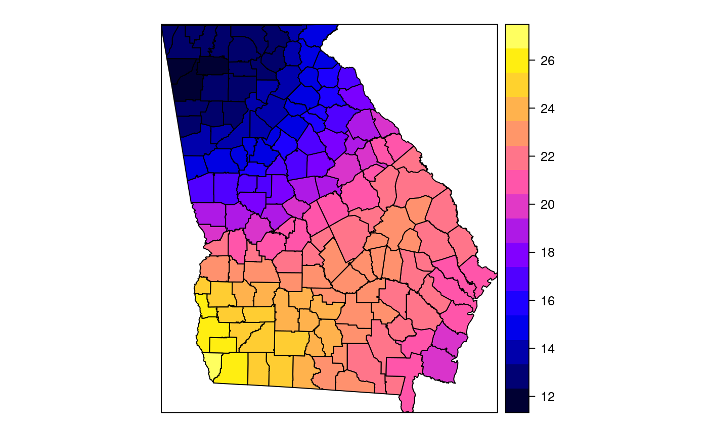spplot(SRgwls$SDF, "sd.PctPov")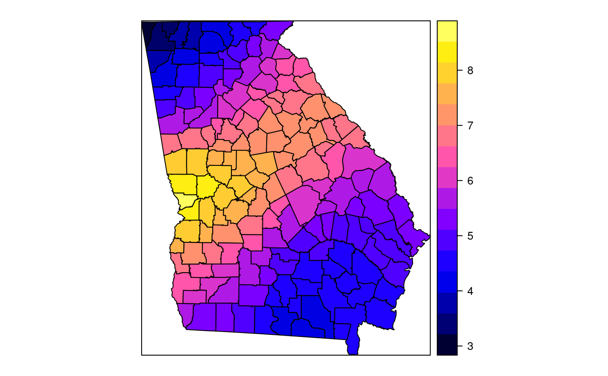spplot(SRgwls$SDF, "sem.PctPov")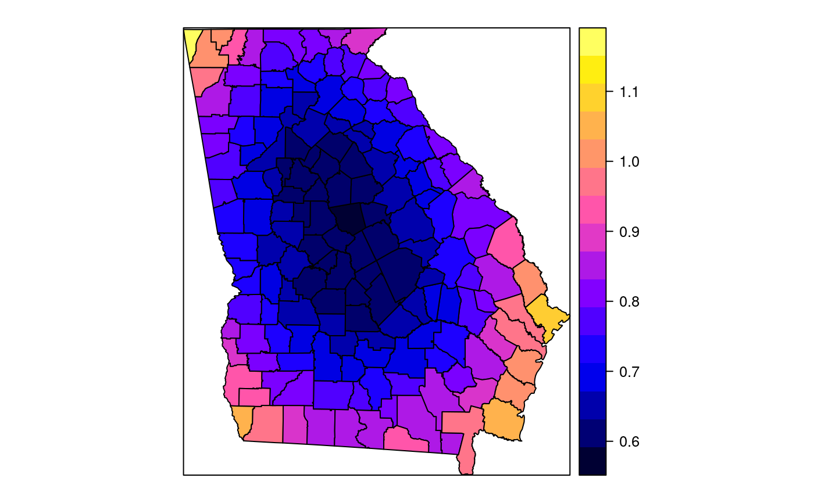spplot(SRgwls$SDF, "diff.PctPov")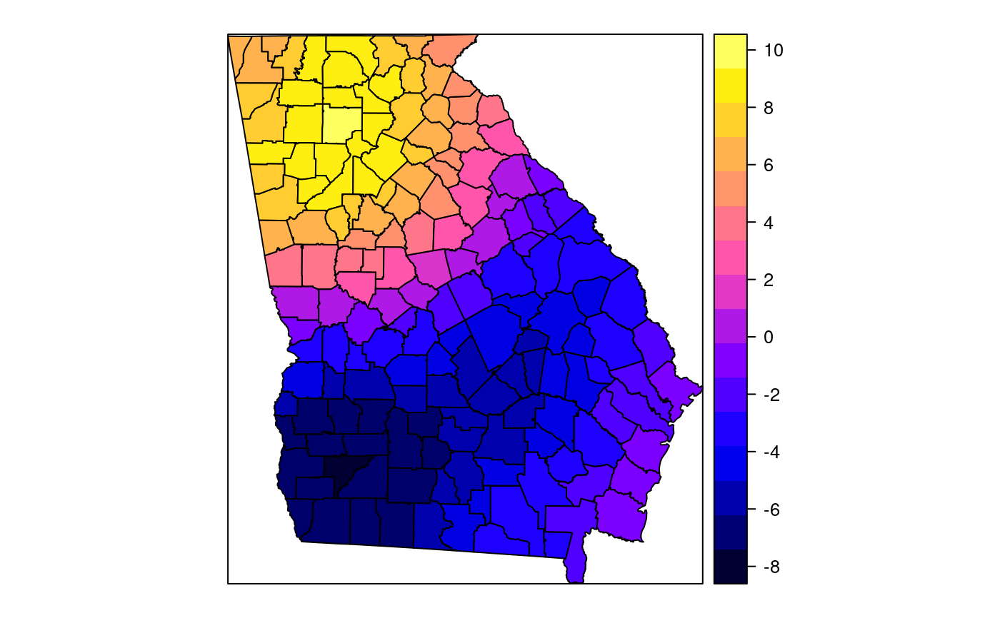spplot(SRgwls$SDF, "cor.PctPov.PctBlack.")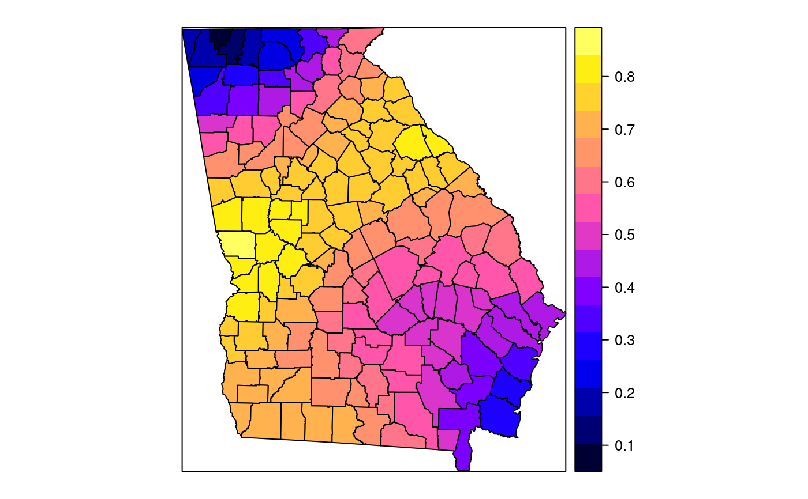#> [1] "mean.PctRural" "mean.PctBach" "mean.PctEld" #> [4] "mean.PctFB" "mean.PctPov" "mean.PctBlack" #> [7] "sd.PctRural" "sd.PctBach" "sd.PctEld" #> [10] "sd.PctFB" "sd.PctPov" "sd.PctBlack" #> [13] "sem.PctRural" "sem.PctBach" "sem.PctEld" #> [16] "sem.PctFB" "sem.PctPov" "sem.PctBlack" #> [19] "diff.PctRural" "diff.PctBach" "diff.PctEld" #> [22] "diff.PctFB" "diff.PctPov" "diff.PctBlack" #> [25] "cov.PctRural.PctBach." "cov.PctRural.PctEld." "cov.PctBach.PctEld." #> [28] "cov.PctRural.PctFB." "cov.PctBach.PctFB." "cov.PctEld.PctFB." #> [31] "cov.PctRural.PctPov." "cov.PctBach.PctPov." "cov.PctEld.PctPov." #> [34] "cov.PctFB.PctPov." "cov.PctRural.PctBlack." "cov.PctBach.PctBlack." #> [37] "cov.PctEld.PctBlack." "cov.PctFB.PctBlack." "cov.PctPov.PctBlack." #> [40] "cor.PctRural.PctBach." "cor.PctRural.PctEld." "cor.PctBach.PctEld." #> [43] "cor.PctRural.PctFB." "cor.PctBach.PctFB." "cor.PctEld.PctFB." #> [46] "cor.PctRural.PctPov." "cor.PctBach.PctPov." "cor.PctEld.PctPov." #> [49] "cor.PctFB.PctPov." "cor.PctRural.PctBlack." "cor.PctBach.PctBlack." #> [52] "cor.PctEld.PctBlack." "cor.PctFB.PctBlack." "cor.PctPov.PctBlack." #> [55] "X1" "X2"spplot(SRgwls$SDF, "mean.PctPov")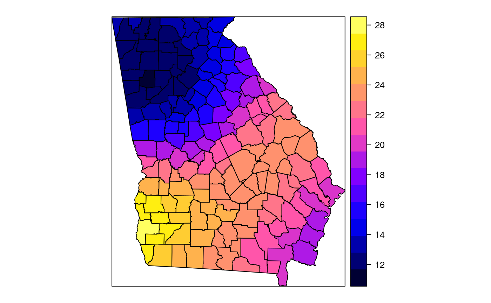spplot(SRgwls$SDF, "sd.PctPov")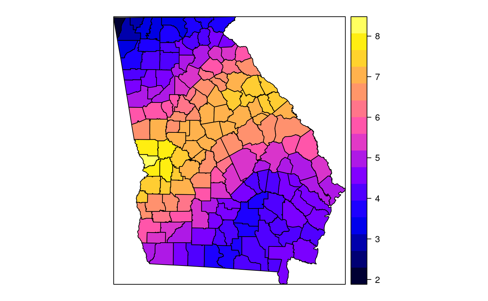spplot(SRgwls$SDF, "sem.PctPov")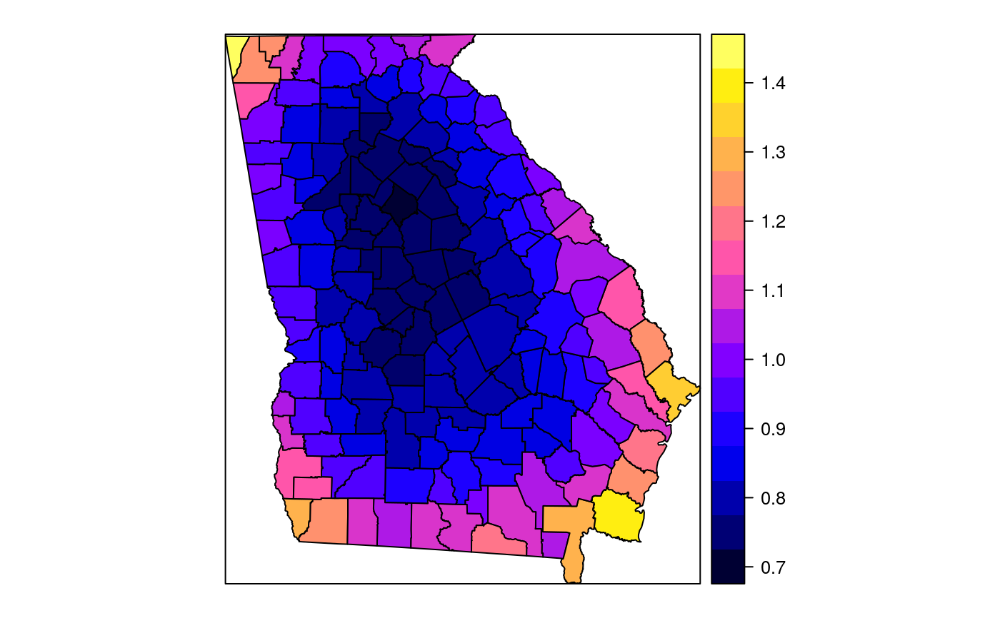spplot(SRgwls$SDF, "diff.PctPov")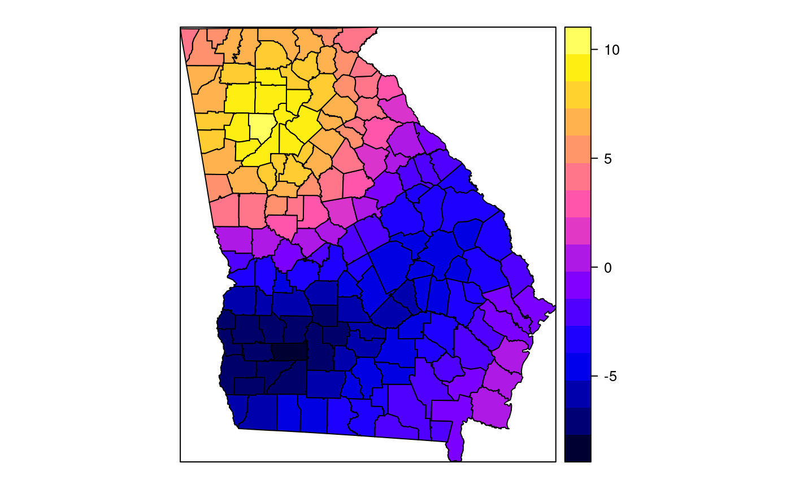spplot(SRgwls$SDF, "cor.PctPov.PctBlack.")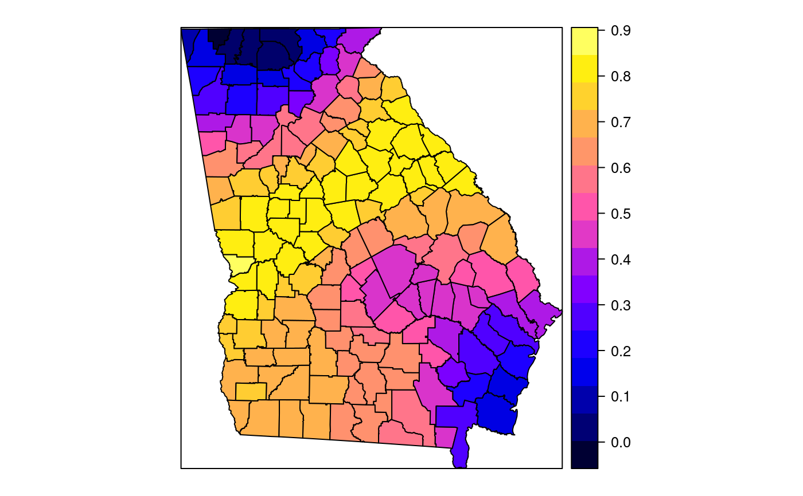data(gSRouter) #gGrid <- sample.Polygons(slot(gSRouter, "polygons")[[1]], 5000, gGrid <- spsample(slot(gSRouter, "polygons")[[1]], 5000, type="regular") gridded(gGrid) <- TRUE SGgwls <- gw.cov(gSRDF, vars=6:11, fp=gGrid, bw=150, longlat=TRUE) names(SGgwls$SDF)#> [1] "mean.PctRural" "mean.PctBach" "mean.PctEld" #> [4] "mean.PctFB" "mean.PctPov" "mean.PctBlack" #> [7] "sd.PctRural" "sd.PctBach" "sd.PctEld" #> [10] "sd.PctFB" "sd.PctPov" "sd.PctBlack" #> [13] "sem.PctRural" "sem.PctBach" "sem.PctEld" #> [16] "sem.PctFB" "sem.PctPov" "sem.PctBlack" #> [19] "diff.PctRural" "diff.PctBach" "diff.PctEld" #> [22] "diff.PctFB" "diff.PctPov" "diff.PctBlack" #> [25] "cov.PctRural.PctBach." "cov.PctRural.PctEld." "cov.PctBach.PctEld." #> [28] "cov.PctRural.PctFB." "cov.PctBach.PctFB." "cov.PctEld.PctFB." #> [31] "cov.PctRural.PctPov." "cov.PctBach.PctPov." "cov.PctEld.PctPov." #> [34] "cov.PctFB.PctPov." "cov.PctRural.PctBlack." "cov.PctBach.PctBlack." #> [37] "cov.PctEld.PctBlack." "cov.PctFB.PctBlack." "cov.PctPov.PctBlack." #> [40] "cor.PctRural.PctBach." "cor.PctRural.PctEld." "cor.PctBach.PctEld." #> [43] "cor.PctRural.PctFB." "cor.PctBach.PctFB." "cor.PctEld.PctFB." #> [46] "cor.PctRural.PctPov." "cor.PctBach.PctPov." "cor.PctEld.PctPov." #> [49] "cor.PctFB.PctPov." "cor.PctRural.PctBlack." "cor.PctBach.PctBlack." #> [52] "cor.PctEld.PctBlack." "cor.PctFB.PctBlack." "cor.PctPov.PctBlack." #> [55] "x1" "x2"spplot(SGgwls$SDF, "mean.PctPov")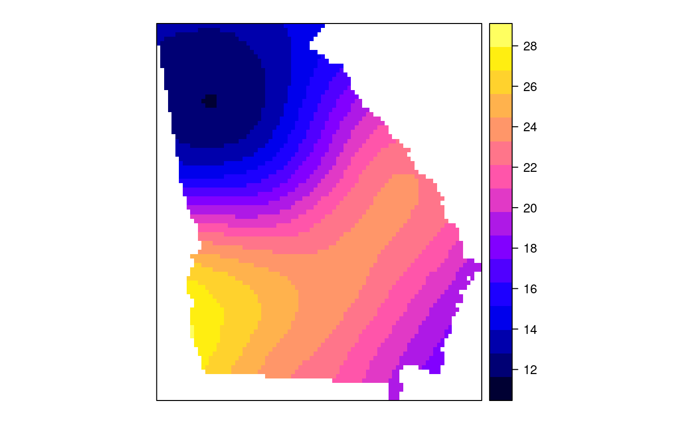spplot(SGgwls$SDF, "sd.PctPov")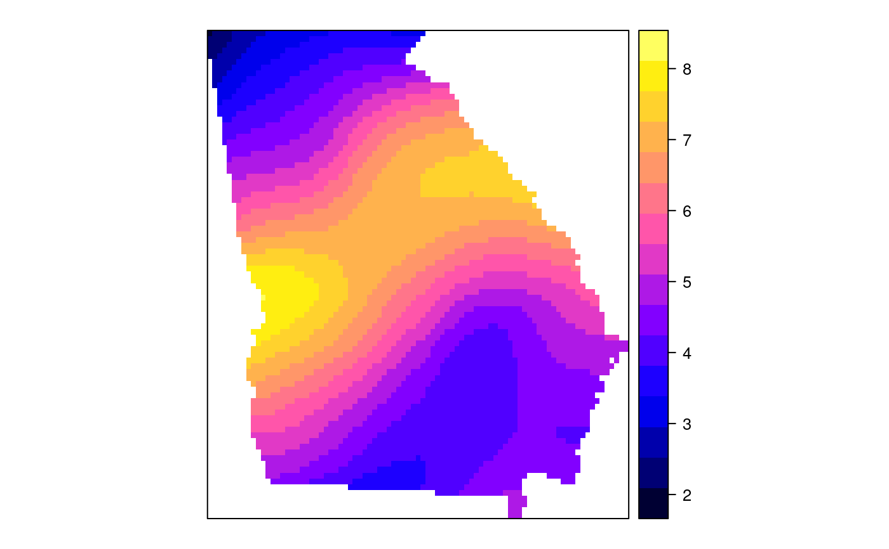spplot(SGgwls$SDF, "sem.PctPov")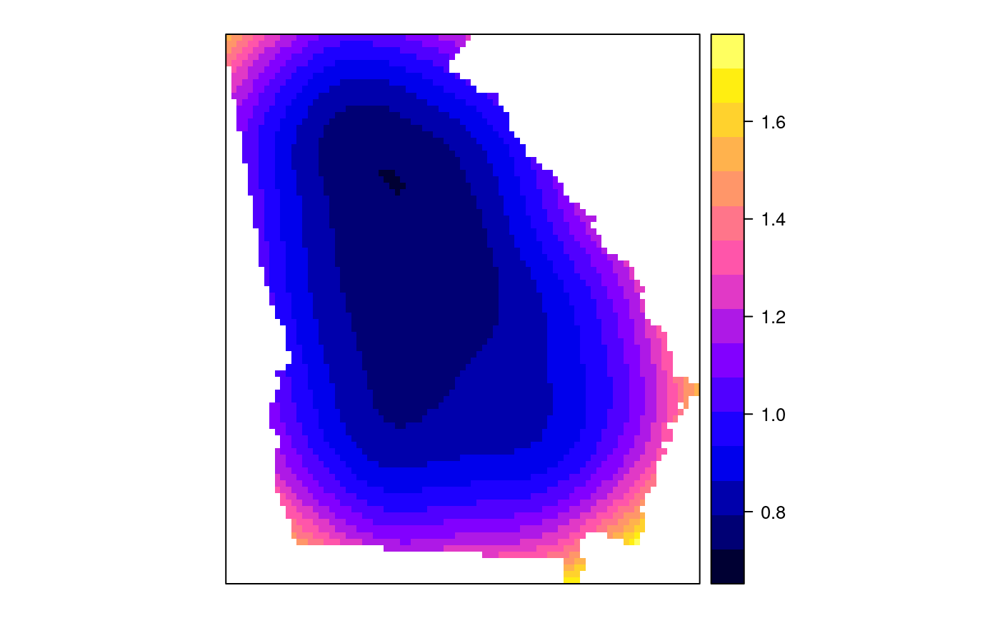spplot(SGgwls$SDF, "diff.PctPov")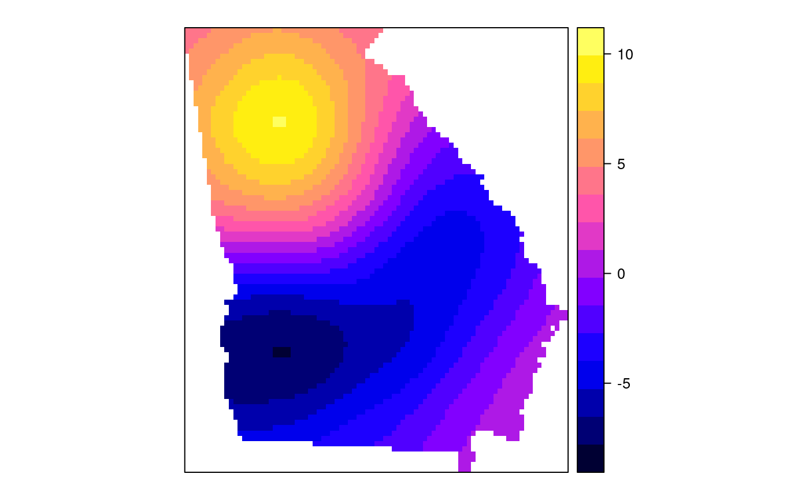spplot(SGgwls$SDF, "cor.PctPov.PctBlack.")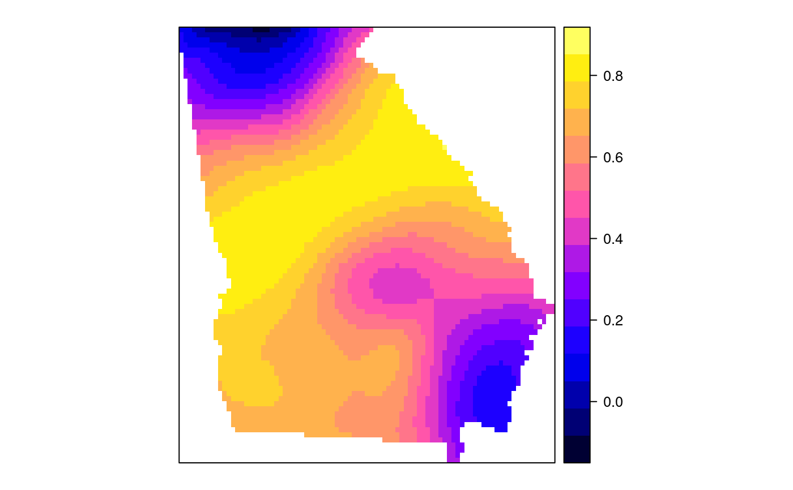set.seed(1) pts <- data.frame(x=runif(100, 0, 5), y=runif(100, 0, 5), z=rnorm(100)) coordinates(pts) <- c("x", "y") proj4string(pts) <- CRS("+proj=longlat +ellps=WGS84") fps <- SpatialPoints(cbind(x=runif(100, 0, 5), y=runif(100, 0, 5)), proj4string=CRS("+proj=longlat +ellps=WGS84")) t0 <- gw.cov(pts, "z", fp=fps, adapt=0.2, longlat=TRUE)